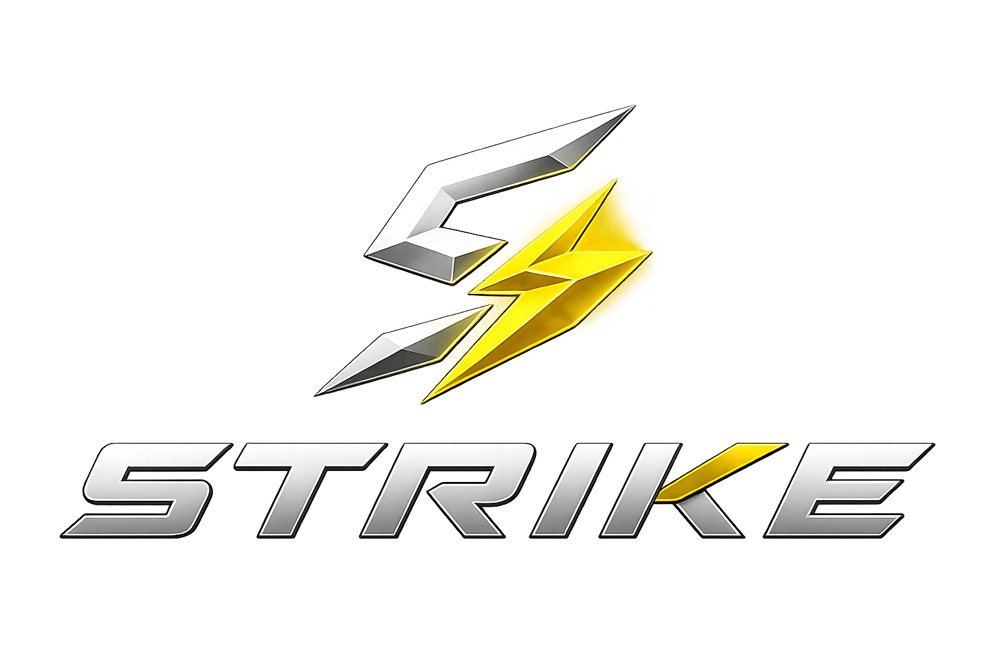

:root { --bg: #050505; --bg-2: #090a0c; --panel: #0e1013; --panel-2: #14171b; --line: #2b2e33; --line-bright: #454a50; --text: #f5f5f7; --muted: #a9adb3; --muted-2: #7d8289; --gold: #d6a928; --gold-bright: #f2c84b; --gold-glow: rgba(242, 200, 75, 0.22); --green: #52b788; --radius-sm: 10px; --radius-md: 14px; --radius-lg: 18px; --pill: 980px; --shadow-sm: 0 10px 30px rgba(0,0,0,.22); --shadow-md: 0 12px 34px rgba(0,0,0,.35); } * { box-sizing: border-box; margin: 0; padding: 0; } html, body { min-height: 100%; } html { color-scheme: dark; } body { font-family: -apple-system, BlinkMacSystemFont, "SF Pro Display", "SF Pro Text", "Helvetica Neue", Helvetica, Arial, sans-serif; background: linear-gradient(rgba(3,3,4,.76), rgba(3,3,4,.88)), radial-gradient(circle at 50% -10%, rgba(214,169,40,.10), transparent 34%), url("../assets/backgrounds/closer%20background.webp") center / cover fixed no-repeat, var(--bg); color: var(--text); line-height: 1.68; overflow-x: hidden; font-size: 16px; -webkit-font-smoothing: antialiased; -moz-osx-font-smoothing: grayscale; } button, input, select, textarea { font: inherit; } button { color: inherit; } ::selection { background: rgba(242,200,75,.30); color: #fff; } /* ============ TOP NAV ============ */ .topnav { background: rgba(7,8,10,.94); backdrop-filter: saturate(150%) blur(18px); -webkit-backdrop-filter: saturate(150%) blur(18px); border-bottom: 1px solid var(--line); box-shadow: 0 10px 34px rgba(0,0,0,.34); padding: 0 36px; position: sticky; top: 0; z-index: 100; display: flex; align-items: center; flex-wrap: wrap; min-height: 64px; gap: 24px; } .brand { display: flex; flex-shrink: 0; } .strike-brand { flex-direction: row; align-items: center; gap: 14px; padding: 8px 0; min-width: 235px; } .strike-brand-logo { display: block; width: 72px; height: 46px; object-fit: contain; object-position: center; flex-shrink: 0; filter: drop-shadow(0 0 8px rgba(242,200,75,.20)) drop-shadow(0 0 16px rgba(214,169,40,.10)); } .strike-brand > a { display: flex; align-items: center; } .strike-brand-copy { display: flex; flex-direction: column; justify-content: center; line-height: 1.15; } .strike-brand-kicker { color: #d5d8de; font-size: 11px; font-weight: 800; letter-spacing: 2.1px; text-transform: uppercase; margin-bottom: 6px; } .brand .name { color: var(--text); font-size: 17px; font-weight: 750; letter-spacing: .2px; } .topnav-links { display: flex; gap: 2px; flex-wrap: wrap; padding: 6px 0; } .topnav-link { background: transparent; border: none; color: var(--muted); padding: 8px 16px; border-radius: var(--pill); cursor: pointer; font-size: 14px; font-weight: 500; transition: color .2s, background-color .2s, box-shadow .2s; white-space: nowrap; } .topnav-link:hover { color: var(--text); background: rgba(255,255,255,.055); } .topnav-link.active { color: #0a0a0a; background: linear-gradient(135deg, var(--gold-bright), #b98912); box-shadow: 0 0 22px var(--gold-glow); } /* ============ LAYOUT ============ */ .main-wrap { display: flex; min-height: calc(100vh - 64px); } .sidebar { width: 248px; background: rgba(9,10,12,.92); border-right: 1px solid var(--line); padding: 28px 16px; flex-shrink: 0; display: none; } .sidebar.visible { display: block; } .sidebar h4 { font-size: 11px; letter-spacing: 2px; text-transform: uppercase; color: var(--gold); margin-bottom: 14px; font-weight: 700; padding: 0 14px; } .sidebar-link { display: block; width: 100%; text-align: left; background: transparent; border: none; color: #c3c6ca; padding: 10px 14px; border-radius: var(--radius-sm); cursor: pointer; font-size: 14px; font-weight: 500; margin-bottom: 2px; transition: color .15s, background-color .15s, box-shadow .15s; line-height: 1.4; } .sidebar-link:hover { background: rgba(255,255,255,.055); color: #fff; } .sidebar-link.active { background: linear-gradient(135deg, rgba(242,200,75,.95), rgba(185,137,18,.96)); color: #090909; box-shadow: 0 0 20px rgba(214,169,40,.14); font-weight: 600; } .content { flex: 1; padding: 48px 56px; max-width: 1080px; margin: 0 auto; width: 100%; } /* ============ HERO / HOME ============ */ .hero { padding: 40px 0 56px; text-align: center; border-bottom: 1px solid var(--line); margin-bottom: 48px; } .hero .eyebrow, .eyebrow-sm, .nav-card .kicker { color: var(--gold-bright); } .hero .eyebrow { font-size: 13px; letter-spacing: 2.5px; text-transform: uppercase; font-weight: 700; margin-bottom: 14px; } .hero h1 { font-size: 50px; font-weight: 700; letter-spacing: -.5px; margin-bottom: 16px; color: var(--text); } .hero .sub { color: var(--muted); font-size: 19px; max-width: 700px; margin: 0 auto; line-height: 1.5; } .card-grid { display: grid; grid-template-columns: repeat(auto-fit, minmax(290px, 1fr)); gap: 16px; margin: 32px 0; } .nav-card { background: linear-gradient(145deg, rgba(255,255,255,.025), transparent 50%), var(--panel); border: 1px solid var(--line); border-radius: var(--radius-lg); padding: 26px 24px; cursor: pointer; transition: transform .2s, border-color .2s, box-shadow .2s; text-align: left; color: var(--text); box-shadow: var(--shadow-sm); } .nav-card:hover { transform: translateY(-2px); border-color: rgba(214,169,40,.55); box-shadow: var(--shadow-md), 0 0 22px rgba(214,169,40,.08); } .nav-card .kicker { font-size: 12px; letter-spacing: 1.5px; text-transform: uppercase; font-weight: 700; margin-bottom: 8px; } .nav-card h3 { font-size: 21px; margin-bottom: 8px; letter-spacing: -.2px; } .nav-card p { color: var(--muted); font-size: 14.5px; } /* ============ CONTENT TYPOGRAPHY ============ */ .eyebrow-sm { font-size: 12px; letter-spacing: 2px; text-transform: uppercase; font-weight: 700; margin-bottom: 10px; } .page-h1 { font-size: 40px; font-weight: 700; letter-spacing: -.5px; margin-bottom: 8px; color: var(--text); } .page-lead { color: var(--muted); font-size: 19px; margin-bottom: 36px; max-width: 760px; line-height: 1.5; } .content h2 { font-size: 26px; font-weight: 700; letter-spacing: -.3px; margin: 40px 0 14px; color: var(--text); } .content h3 { font-size: 19px; font-weight: 700; margin: 28px 0 10px; color: var(--text); } .content p { margin-bottom: 14px; color: #c3c6ca; } .content ul, .content ol { margin: 0 0 16px 22px; } .content li { margin-bottom: 8px; color: #c3c6ca; } .content strong { font-weight: 650; color: #fff; } .lead-in { font-size: 17px; } /* ============ TABLES ============ */ table { width: 100%; border-collapse: collapse; margin: 18px 0 24px; font-size: 14.5px; background: linear-gradient(145deg, rgba(255,255,255,.025), transparent 50%), var(--panel); border: 1px solid var(--line); border-radius: 12px; overflow: hidden; color: var(--text); } th { background: #15171a; text-align: left; padding: 12px 16px; font-weight: 700; font-size: 12px; letter-spacing: .6px; text-transform: uppercase; color: #d0d3d7; border-bottom: 1px solid var(--line); } td { padding: 13px 16px; border-bottom: 1px solid #202328; vertical-align: top; color: #c7c9cd; } tr:last-child td { border-bottom: none; } /* ============ CALLOUTS ============ */ .callout { border-radius: var(--radius-md); padding: 18px 22px; margin: 20px 0; border: 1px solid var(--line); background: linear-gradient(145deg, rgba(255,255,255,.025), transparent 50%), var(--panel); color: var(--text); box-shadow: var(--shadow-sm); } .callout .ttl { font-weight: 700; font-size: 14px; letter-spacing: .3px; margin-bottom: 6px; display: flex; align-items: center; gap: 8px; } .callout p:last-child, .callout ul:last-child { margin-bottom: 0; } .callout.rule { border-left: 4px solid var(--gold); background: rgba(214,169,40,.075); } .callout.rule .ttl { color: var(--gold-bright); } .callout.warn { border-left: 4px solid #d49a28; background: rgba(212,154,40,.08); } .callout.warn .ttl { color: #e6b34d; } .callout.verbatim { border-left: 4px solid #d6d6d8; background: rgba(255,255,255,.035); font-style: italic; } .callout.verbatim .ttl { color: #f4f4f5; font-style: normal; } .callout.source { border-left: 4px solid var(--green); background: rgba(82,183,136,.07); } .callout.source .ttl { color: #74c69d; } /* ============ QUICK REFERENCE ============ */ .qref { background: radial-gradient(circle at 100% 0%, rgba(214,169,40,.12), transparent 34%), linear-gradient(145deg, #17191d, #0b0c0e); color: var(--text); border-radius: 16px; padding: 26px 28px; margin: 28px 0; border: 1px solid var(--line-bright); box-shadow: 0 18px 42px rgba(0,0,0,.34); } .qref .ttl { color: var(--gold-bright); font-size: 12px; letter-spacing: 2px; text-transform: uppercase; font-weight: 700; margin-bottom: 14px; } .qref h4 { color: #fff; font-size: 16px; margin: 14px 0 6px; } .qref ul { margin-left: 20px; } .qref li, .qref td { color: #d0d2d5; } .qref li { margin-bottom: 6px; } .qref strong { color: #fff; } .qref table { background: transparent; box-shadow: none; } .qref th { background: rgba(255,255,255,.055); color: #aeb2b7; border-color: rgba(255,255,255,.1); } .qref td { border-color: rgba(255,255,255,.08); } /* ============ TAGS / CHIPS ============ */ .tag { display: inline-block; font-size: 10.5px; font-weight: 700; letter-spacing: .6px; text-transform: uppercase; padding: 3px 9px; border-radius: var(--pill); margin-left: 8px; vertical-align: middle; } .tag.stable { background: rgba(82,183,136,.13); color: #74c69d; } .tag.volatile { background: rgba(214,169,40,.12); color: var(--gold-bright); } .sot { display: inline-flex; align-items: center; gap: 6px; background: rgba(214,169,40,.10); color: var(--gold-bright); border: 1px solid rgba(214,169,40,.28); border-radius: 8px; padding: 2px 9px; font-size: 12.5px; font-weight: 650; } /* ============ PLAYBOOKS ============ */ details.playbook { background: linear-gradient(145deg, rgba(255,255,255,.025), transparent 50%), var(--panel); border: 1px solid var(--line); border-radius: var(--radius-md); padding: 4px 22px; margin: 14px 0; box-shadow: var(--shadow-sm); } details.playbook summary { cursor: pointer; font-weight: 650; padding: 14px 0; list-style: none; font-size: 16px; } details.playbook summary::-webkit-details-marker { display: none; } details.playbook summary::before { content: "+"; color: var(--gold-bright); font-weight: 700; margin-right: 10px; } details.playbook[open] summary::before { content: "–"; } details.playbook[open] { padding-bottom: 18px; } .pill-note { font-size: 13px; color: var(--muted-2); margin-top: 6px; } .divider { height: 1px; background: var(--line); margin: 36px 0; border: none; } a.loom { color: var(--gold-bright); font-weight: 600; text-decoration: none; } a.loom:hover { text-decoration: underline; } /* ============ BUTTONS / MEDIA ============ */ .launch-btn { display: inline-block; background: linear-gradient(135deg, var(--gold-bright), #ad7f10); color: #090909; font-weight: 600; font-size: 14.5px; padding: 10px 20px; border-radius: var(--pill); text-decoration: none; margin: 0 0 26px; transition: filter .2s, transform .2s; box-shadow: 0 0 20px rgba(214,169,40,.12); } .launch-btn:hover { filter: brightness(1.08); transform: translateY(-1px); } .dl-btn { display: inline-block; background: transparent; color: var(--gold-bright); border: 1.5px solid var(--gold); font-weight: 600; font-size: 14px; padding: 9px 18px; border-radius: var(--pill); text-decoration: none; margin: 16px 0 8px; transition: color .2s, background-color .2s; } .dl-btn:hover { background: var(--gold); color: #090909; } .video-wrap { margin: 20px 0 8px; border-radius: var(--radius-md); overflow: hidden; box-shadow: 0 8px 30px rgba(0,0,0,.42); border: 1px solid var(--line); } input, select, textarea { background: var(--panel); color: var(--text); border-color: var(--line); } /* ============ RESPONSIVE ============ */ @media (max-width: 820px) { .sidebar { display: none !important; } .content { padding: 32px 22px; } .hero h1 { font-size: 36px; } .page-h1 { font-size: 30px; } .strike-brand-logo { width: 58px; height: 40px; } .strike-brand-kicker { font-size: 9px; letter-spacing: 1.6px; margin-bottom: 4px; } .strike-brand .name { font-size: 14px; } } /* TEMPORARY: red text marks Fiber content that still needs review */ .needs-review, .needs-review p, .needs-review li, .needs-review td, .needs-review th, .needs-review strong, .needs-review span:not(.tag), .needs-review a { color: #ff5b65 !important; }

STRIKE SYSTEMS
Fiber Closer Hub